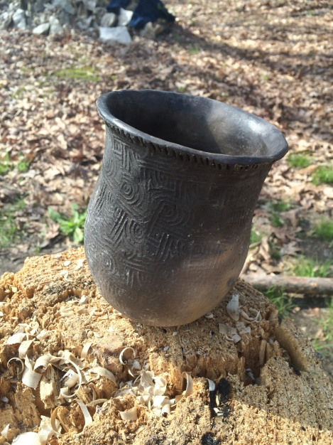

Alternate source
Coffee drinkers like myself usually have a favorite mug or cup. My all-time favorite “tankard” developed a crack and DRG trashed it. A sad day indeed!
My sob story may seem petty, but there’s nothing trivial about not having a way to “contain” stuff. Think of all the ways you use containers daily. Then imagine all your modern containers being gone… poof, no more. Welcome to the Stone Age!
Here’s what else disappears with your containers. Your ability to…
• Cook stuff without skewering it on a stick
• Collect, disinfect, transport, and drink water
• Raise plants and livestock
• Store food without stuffing it in an animal stomach
• Dispose of waste
• Personal hygiene
• Ferment food and drink
• Make medicinals
• Gather food
• Keep stuff clean
• Organize stuff
• etc., etc., etc….
This is why containers are king!
After attending a local two-day primitive pottery class, my respect and appreciation for the humble container grew exponentially. Making primitive pottery is not an emergency survival skill. If you’re making pottery in a 72 hour survival situation, you’re doing something wrong. There are easier ways to contain stuff in short-term scenarios. You’d have more important priorities to attend to than digging clay and firing primitive pottery. This is why your should always carry a metal container on outings.
The Process: Harvesting Clay
An instructor digging clay in a deep gully. The top inset shows a small piece of raw clay formed into a pyramid with polished sides.
Clay can be found in most parts of the round ball of dirt we call home. Some forms are better suited than others for pottery. Test the clay by rolling it between your hands to form a rope. If it bends into a pretzel without breaking, you’ve found a good candidate. Too much sand in the clay will cause it to the raw clay to crack and break.
There are ways to process marginal clay to make it useful stuff.
Crafting Containers
Break off a orange-size piece of clay and work it in your hands. Before molding your container, temper the clay. Crushed rock, wood ash, and fired pottery shards can be used as a temper. The temper agent helps to control thermal shock and shrinkage during the drying and firing of your pottery.
Burnishing a pot with a smooth stone
Pots, pipes, and beads are set in the shade to dry for an hour. After that time, designs can be added to the pottery.
Tools
Like any craft, specific tools are needed. Below are some of the tools Brian Floyd, our guest instructor, uses to make his amazing pottery.
A few of Brian’s tools of the trade
The paddles pictured above are used to paddle the clay against an anvil (solid surface; rock, knee, etc.) which, if my memory serves me, helps hold the clay together as you mold it. Stamped paddles also add a design to your clay pot.
Brain demonstrated how to carve a paddle with primitive tools.
Splitting poplar with a hand ax and maul to make a pottery paddle
Primitive adze shaping paddle
 Beaver tooth tool for carving paddles and other woodworking tasks… sorry about the focus
Beaver tooth tool for carving paddles and other woodworking tasks… sorry about the focusEach student received the following basic tools:
1. Paddle
2. Anvil
3. Awl of river cane
4. Scraper
Drying and Firing
We sheltered the pottery on Scott’s porch to dry for two weeks before firing. On our second day of class, two weeks later, a long fire was burning when students arrived for class. Scott and Brain had our pottery on wood rounds in a semi-circle near the fire for pre-firing.
Heating the dried pottery too quickly will cause it to break into pieces. We gradually moved the items closer to the fire.
My container blew up
Eventually all the way into the fire.
Hurry Up and Wait
Watching primitive pottery fire is like watching paint dry. Modern primitive practitioners take advantage of the long wait by making other primitive stuff… “burn and scrape” wooden spoons and carved pottery paddles.
Blowing a hot coal through a section of river cane to burn the bowl of my spoon
{kind=link}
Once your spoon is carved, place a hot coal from the fire on the bowl of your spoon. Balance the coal and blow through a hollow reed or section of river cane. Use a green twig to hold the coal in place as you blow.
Scott Jones demonstrating how to do the stuff
After burning a layer of wood on the bowl, scrape the area with a flint flake or other sharp stone. Repeat the burn and scrape cycle until you have reached the desired depth for your wooden spoon.
My new serving spoon for camp chili
After the final scrape, burnish the wooden bowl with a smooth stone. The blackened bowl can be sanded clean if you desire. I like the burned look and plan to seal the spoon with walnut oil and use as is.
Finished Pottery
Many of the student containers made it through the firing process. Mine did not. Not all is lost. I plan to use the broken halves as mixing containers at my shelter to make pitch sticks and other primitive projects. The shards can be ground and used as temper for my next pottery project.
Here’s a few pics of some containers that made it through…

The two containers (pictured above) and the cook pot in the fire below was crafted by our instructor, Brian Floyd. His primitive pottery is functional as well as being works of art.